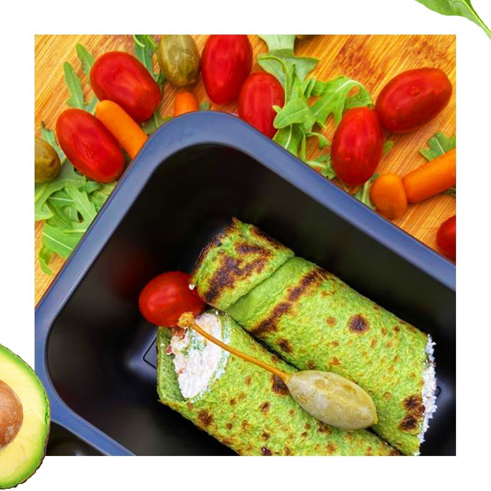

Kapary podľa @boxyszczescia.pl — Normy Jedál
Naleśniki szpinakowe z serkiem chrzanowym, suszonym pomidorem i sałatą z marchewką i kaparami 🧡
Jutro na śniadanie. I nic więcej nie trzeba pisać :)
#naleśniki #serekchrzanowy #suszonepomidory #pomidory #sałata #marchewka #kapary #jedzenie #zdrowejedzenie #zdroweodżywianie #dietapudełkowa #cateringdietetyczny #naleśnikiszpinakowe #Ostróda #Olsztyn #Iława #Lubawa #NoweMiastoLubawskie #fit #fitprzepisy #omnomnom #instafood #instafoodie